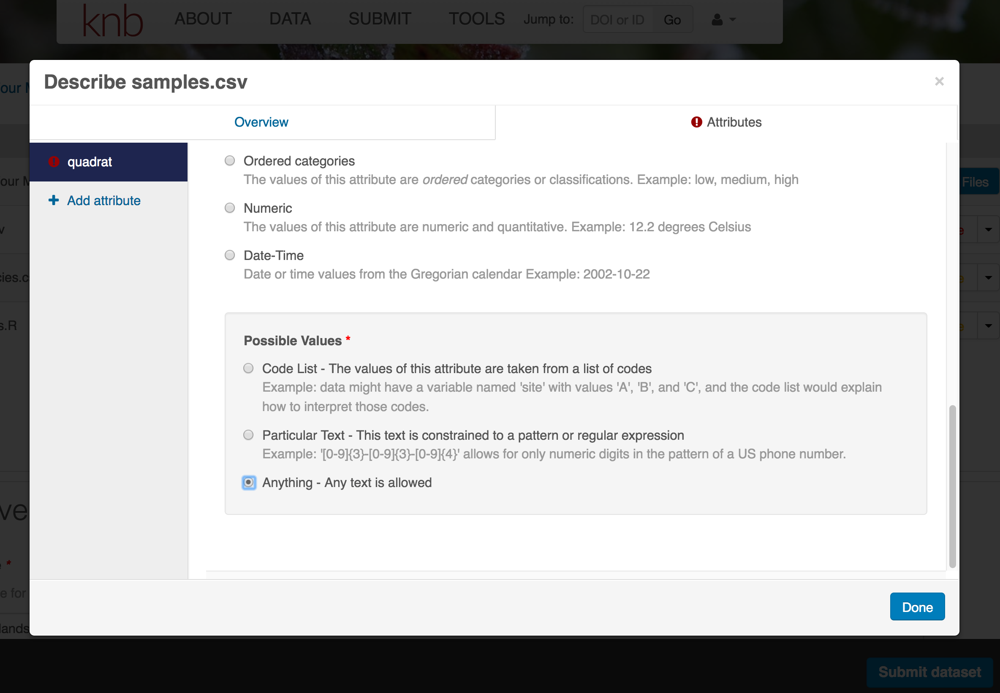
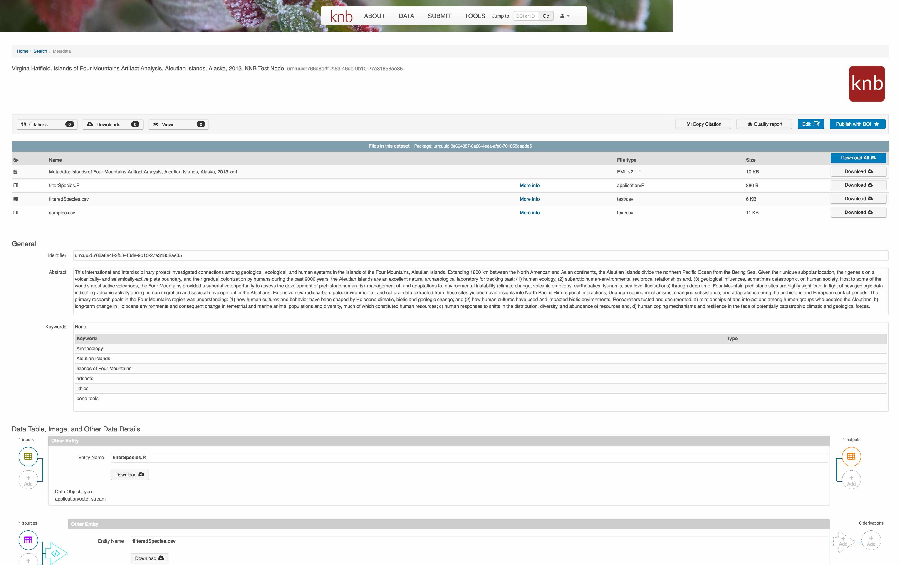

11.1 Learning Objectives
- Overview best practices for organizing data for publication
- Review what science metadata is and how it can be used
- Demonstrate how data and code can be documented and published in open data archives
11.2 The Data Life Cycle - A Recap
The Data Life Cycle gives you an overview of meaningful steps data goes through in a research project, from planning to archival. This step-by-step breakdown facilitates overseeing individual actions, operations and processes required at each stage.

| Step | Description |
|---|---|
| Plan | Map out the processes and resources for the entire data life cycle. Start with the project goals (desired outputs, outcomes, and impacts) and work backwards to build a data management plan, supporting data policies, and sustainability plans. |
| Collect | Observations are made either by hand or with sensors or other instruments and the data are placed a into digital form. You can structure the process of collecting data up front to better implement data management. |
| Assure | Employ quality assurance and quality control procedures that enhance the quality of data (e.g., training participants, routine instrument calibration) and identify potential errors and techniques to address them. |
| Describe | Document data by describing the why, who, what, when, where, and how of the data. Metadata, or data about data, are key to data sharing and reuse, and many tools such as standards and software are available to help describe data. |
| Preserve | Plan to preserve data in the short term to minimize potential losses (e.g., via accidents), and in the long term so that project stakeholders and others can access, interpret, and use the data in the future. Decide what data to preserve, where to preserve it, and what documentation needs to accompany the data. |
| Discover | Identify complementary data sets that can add value to project data. Strategies to help endure the data have maximum impact include registering the project on a project directory site, depositing data in an open repository, and adding data descriptions to metadata clearing houses. |
| Integrate | Data from multiple sources are combined into a form that can be readily analyzed. For example, you could combine citizen science project data with other sources of data to enable new analyses and investigations. Successful data integration depends on documentation of the integration process, clearly citing and making accessable the data you are using, and employing good data management practices throughout the Data Life Cycle. |
| Analyze | Create analyses and visualizations to identify patterns, test hypotheses, and illustrate finding. During this process record your methods, document data processing steps, and ensure your data are reproduceable. Learn about these best practices and more. |
In this lesson we focus on the Describe and Preserve stages of this cycle. However, best practices on how to organize and document your data, apply to all stages.
11.3 Organizing Data
The goal is to operate through the data life cycle with the FAIR and CARE principles in mind and making sure our data is in a tidy format.

Benefits of having clean and tidy data and complete metadata:
- Decreases errors from redundant updates
- Enforces data integrity
- Helps you and future researchers to handle large, complex datasets
- Enables powerful search filtering
Some of the best practices to follow are (Borer et al. (2009), White et al. (2013)):
- Have scripts for all data wrangling that start with the uncorrected raw data file and clean the data programmatically before analysis.
- Design your tables to add rows, not columns. A column should be only one variable and a row should be only one observation.
- Include header lines in your tables
- Use non-proprietary file formats (ie, open source) with descriptive file names without spaces.
Non-proprietary file formats are essential to ensure that your data can still be machine readable long into the future. Open formats include text files and binary formats such as NetCDF.

Common switches:
| Proprietary format | Export to… |
|---|---|
| Microsoft Excel (.xlsx) files | text (.txt) or comma separated values (.csv) |
| GIS files | ESRI shapefiles (.shp) |
| MATLAB/IDL | NetCDF |
When you have or are going to generate large data packages (in the terabytes or larger), it’s important to establish a relationship with the data center early on.
The data center can help come up with a strategy to tile data structures by subset, such as by spatial region, by temporal window, or by measured variable. They can also help with choosing an efficient tool to store the data (ie NetCDF or HDF), which is a compact data format that helps parallel read and write libraries of data.
11.4 Data sharing and preservation

11.4.1 Data repositories: built for data (and code)
- GitHub is not an archival location
- Dedicated data repositories: KNB, Arctic Data Center, Zenodo, FigShare
- Rich metadata
- Archival in their mission
- Data papers, e.g., Scientific Data
- List of data repositories: http://re3data.org

11.4.2 Metadata
Metadata are documentation describing the content, context, and structure of data to enable future interpretation and reuse of the data. Generally, metadata describe who collected the data, what data were collected, when and where it was collected, and why it was collected.
For consistency, metadata are typically structured following metadata content standards such as the Ecological Metadata Language (EML). For example, here’s an excerpt of the metadata for a sockeye salmon data set:
<?xml version="1.0" encoding="UTF-8"?>
<eml:eml packageId="df35d.442.6" system="knb"
xmlns:eml="eml://ecoinformatics.org/eml-2.1.1">
<dataset>
<title>Improving Preseason Forecasts of Sockeye Salmon Runs through
Salmon Smolt Monitoring in Kenai River, Alaska: 2005 - 2007</title>
<creator id="1385594069457">
<individualName>
<givenName>Mark</givenName>
<surName>Willette</surName>
</individualName>
<organizationName>Alaska Department of Fish and Game</organizationName>
<positionName>Fishery Biologist</positionName>
<address>
<city>Soldotna</city>
<administrativeArea>Alaska</administrativeArea>
<country>USA</country>
</address>
<phone phonetype="voice">(907)260-2911</phone>
<electronicMailAddress>mark.willette@alaska.gov</electronicMailAddress>
</creator>
...
</dataset>
</eml:eml>That same metadata document can be converted to HTML format and displayed in a much more readable form on the web: https://knb.ecoinformatics.org/#view/doi:10.5063/F1F18WN4
 And as you can see, the whole data set or its components can be downloaded and reused.
And as you can see, the whole data set or its components can be downloaded and reused.
Also note that the repository tracks how many times each file has been downloaded, which gives great feedback to researchers on the activity for their published data.
11.4.3 Structure of a data package
Note that the data set above lists a collection of files that are contained within the data set. We define a data package as a scientifically useful collection of data and metadata that a researcher wants to preserve. Sometimes a data package represents all of the data from a particular experiment, while at other times it might be all of the data from a grant, or on a topic, or associated with a paper. Whatever the extent, we define a data package as having one or more data files, software files, and other scientific products such as graphs and images, all tied together with a descriptive metadata document.
 These data repositories all assign a unique identifier to every version of every data file, similarly to how it works with source code commits in GitHub. Those identifiers usually take one of two forms. A DOI identifier is often assigned to the metadata and becomes the publicly citable identifier for the package. Each of the other files gets an internal identifier, often a UUID that is globally unique. In the example above, the package can be cited with the DOI
These data repositories all assign a unique identifier to every version of every data file, similarly to how it works with source code commits in GitHub. Those identifiers usually take one of two forms. A DOI identifier is often assigned to the metadata and becomes the publicly citable identifier for the package. Each of the other files gets an internal identifier, often a UUID that is globally unique. In the example above, the package can be cited with the DOI doi:10.5063/F1F18WN4.
11.4.4 DataONE Federation
DataONE is a federation of dozens of data repositories that work together to make their systems interoperable and to provide a single unified search system that spans the repositories. DataONE aims to make it simpler for researchers to publish data to one of its member repositories, and then to discover and download that data for reuse in synthetic analyses.
DataONE can be searched on the web (https://search.dataone.org/), which effectively allows a single search to find data form the dozens of members of DataONE, rather than visiting each of the currently 43 repositories one at a time.

11.5 Publishing data from the web
Each data repository tends to have its own mechanism for submitting data and providing metadata. With repositories like the KNB Data Repository and the Arctic Data Center, we provide some easy to use web forms for editing and submitting a data package. Let’s walk through a web submission to see what you might expect.
Download the data to be used for the tutorial
I’ve already uploaded the test data package, and so you can access the data here:
- https://dev.nceas.ucsb.edu/view/urn:uuid:0702cc63-4483-4af4-a218-531ccc59069f
Grab both CSV files, and the R script, and store them in a convenient folder.

11.6 Login via ORCID
We will walk through web submission on https://demo.nceas.ucsb.edu, and start by logging in with an ORCID account. ORCID provides a common account for sharing scholarly data, so if you don’t have one, you can create one when you are redirected to ORCID from the Sign In button.

When you sign in, you will be redirected to orcid.org, where you can either provide your existing ORCID credentials, or create a new account. ORCID provides multiple ways to login, including using your email address, institutional logins from many universities, and logins from social media account providers. Choose the one that is best suited to your use as a scholarly record, such as your university or agency login.

Create and submit the data set
After signing in, you can access the data submission form using the Submit button. Once on the form, upload your data files and follow the prompts to provide the required metadata. Required sections are listed with a red asterisk.
Click Add Files to choose the data files for your package
You can select multiple files at a time to efficiently upload many files.

The files will upload showing a progress indicator. You can continue editing metadata while they upload.

Enter Overview information
This includes a descriptive title, abstract, and keywords.
The title is the first way a potential user will get information about your dataset. It should be descriptive but succinct, lack acronyms, and include some indication of the temporal and geospatial coverage of the data.
The abstract should be sufficently descriptive for a general scientific audience to understand your dataset at a high level. It should provide an overview of the scientific context/project/hypotheses, how this data package fits into the larger context, a synopsis of the experimental or sampling design, and a summary of the data contents.
Keywords, while not required, can help increase the searchability of your dataset, particularly if they come from a semantically defined keyword thesaurus.

Optionally, you can also enter funding information, including a funding number, which can help link multiple datasets collected under the same grant.
Selecting a distribution license - either CC-0 or CC-BY is required.

People Information
Information about the people associated with the dataset is essential to provide credit through citation and to help people understand who made contributions to the product. Enter information for the following people:
- Creators - all the people who should be in the citation for the dataset
- Contacts - one is required, but defaults to the first Creator if omitted
- Principal Investigators
- and any other that are relevant
For each, please strive to provide their ORCID identifier, which helps link this dataset to their other scholarly works.

11.6.0.0.1 Temporal Information
Add the temporal coverage of the data, which represents the time period to which data apply.

Location Information
The geospatial location that the data were collected is critical for discovery and interpretation of the data. Coordinates are entered in decimal degrees, and be sure to use negative values for West longitudes. The editor allows you to enter multiple locations, which you should do if you had noncontiguous sampling locations. This is particularly important if your sites are separated by large distances, so that a spatial search will be more precise.

Note that, if you miss fields that are required, they will be highlighted in red to draw your attention. In this case, for the description, provide a comma-separated place name, ordered from the local to global. For example:
- Mission Canyon, Santa Barbara, California, USA

Methods
Methods are critical to accurate interpretation and reuse of your data. The editor allows you to add multiple different methods sections, include details of sampling methods, experimental design, quality assurance procedures, and computational techniques and software. Please be complete with your methods sections, as they are fundamentally important to reuse of the data.

Save a first version with Submit
When finished, click the Submit Dataset button at the bottom.
If there are errors or missing fields, they will be highlighted.
Correct those, and then try submitting again. When you are successful, you should see a green banner with a link to the current dataset view. Click the X to close that banner, if you want to continue editing metadata.

Success!
File and variable level metadata
The final major section of metadata concerns the structure and contents of your data files. In this case, provide the names and descriptions of the data contained in each file, as well as details of their internal structure.
For example, for data tables, you’ll need the name, label, and definition of each variable in your file. Click the Describe button to access a dialog to enter this information.

The Attributes tab is where you enter variable (aka attribute) information. In the case of tabular data (such as csv files) each column is an attribute, thus there should be one attribute defined for every column in your dataset. Attribute metadata includes:
- variable name (for programs)
- variable label (for display)

- variable definition (be specific)
- type of measurement

- units & code definitions

You’ll need to add these definitions for every variable (column) in the file. When done, click Done.

Now the list of data files will show a green checkbox indicating that you have full described that file’s internal structure. Proceed with the other CSV files, and then click Submit Dataset to save all of these changes.
Note that attribute information is not relevant for data files that do not contain variables, such as the R script in this example. Other examples of data files that might not need attributes are images, pdfs, and non-tabular text documents (such as readme files). The yellow circle in the editor indicates that attributes have not been filled out for a data file, and serves as a warning that they might be needed, depending on the file.

After you get the green success message, you can visit your dataset and review all of the information that you provided. If you find any errors, simply click Edit again to make changes.
Add workflow provenance
Understanding the relationships between files in a package is critically important, especially as the number of files grows. Raw data are transformed and integrated to produce derived data, that are often then used in analysis and visualization code to produce final outputs. In DataONE, we support structured descriptions of these relationships, so one can see the flow of data from raw data to derived to outputs.
You add provenance by navigating to the data table descriptions, and selecting the Add buttons to link the data and scripts that were used in your computational workflow. On the left side, select the Add circle to add an input data source to the filteredSpecies.csv file. This starts building the provenance graph to explain the origin and history of each data object.

The linkage to the source dataset should appear.

Then you can add the link to the source code that handled the conversion between the data files by clicking on Add arrow and selecting the R script:
Select the R script and click “Done.”


The diagram now shows the relationships among the data files and the R script, so click Submit to save another version of the package.

Et voilà! A beatifully preserved data package!